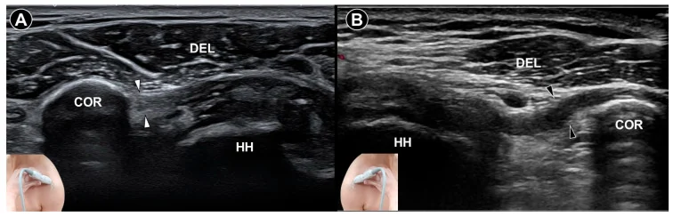

Nella capsulite adesiva la capsula che avvolge l'articolazione si infiamma e si retrae: la spalla fa male e, soprattutto, si muove sempre meno, anche in maniera passiva.
Si dice spesso che guarisce da sola in due o tre anni. È una semplificazione: gli studi mostrano un recupero reale, ma non sempre completo.

Come si manifesta
- Dolore inizialmente intenso, spesso peggiore di notte.
- Perdita progressiva del movimento, in particolare della rotazione esterna.
- La rigidità c'è anche quando è un'altra persona a muovere il braccio: è il segno che la distingue dalle altre cause.
- Difficoltà in gesti precisi: allacciare il reggiseno, prendere il portafoglio dalla tasca posteriore, infilare una giacca.
È più frequente fra i quaranta e i sessant'anni e nelle persone con diabete ed altre patologie metaboliche.
Quando preoccuparsi
Contatta il medico presto se
- la rigidità è comparsa dopo un trauma o una frattura;
- la spalla è calda, gonfia e hai febbre;
- il dolore notturno è insopportabile e non risponde ai farmaci;
- la perdita di movimento peggiora rapidamente nel giro di poche settimane.
Il motivo principale per farsi vedere presto non è la gravità: è che riconoscerla all'inizio cambia il trattamento.
Cosa puoi fare tu
Fai
- Fai ogni giorno gli esercizi di allungamento che ti sono stati insegnati.
- Regola l'intensità sul dolore: nelle fasi irritabili si lavora più dolcemente.
- Usa il braccio per le attività quotidiane, nei limiti del possibile.
- Per la terapia farmacologica chiedi al medico.
Non fare
- Non forzare con manovre aggressive nella fase dolorosa: peggiorano le cose.
- Non smettere di muovere la spalla perché fa male.
- Non aspettare passivamente che «passi da sola».
Quanto dura
La descrizione classica parla di tre fasi — dolorosa, di rigidità, di recupero — con una guarigione completa anche senza trattamento. Una revisione sistematica ha provato a verificare se questo schema trovi conferma negli studi.[2]
Negli studi inclusi, con follow-up da uno a quattro anni, il movimento migliorava, ma non sempre tornava completo, e gran parte del recupero avveniva nelle prime fasi più che alla fine. Gli autori ritengono quindi che una risoluzione spontanea e completa sia meno scontata di quanto si pensi.
Non è un motivo per preoccuparsi: è un buon motivo per trattarla, senza limitarsi ad aspettare.
Le cure, e quanto funzionano
Quello che la linea guida raccomanda[1]
- Infiltrazione intrarticolare di corticosteroide associata agli esercizi: con il grado di raccomandazione più alto, dà un sollievo del dolore e un recupero funzionale migliori del solo esercizio nelle prime quattro-sei settimane.
- Esercizi di allungamento, con intensità graduata sull'irritabilità dei tessuti.
- Educazione sul decorso della malattia e su come modificare le attività restando senza dolore.
- Mobilizzazioni articolari e, nelle forme che non rispondono, la manipolazione in anestesia.
Da notare: l'infiltrazione funziona se accompagnata dagli esercizi, e il beneficio documentato riguarda le prime settimane. È il punto in cui conviene non fermarsi all'infiltrazione e basta.
Quando serve lo specialista
Presto, più che in altre condizioni della spalla: riconoscerla nella fase iniziale permette di impostare subito la combinazione giusta e di non perdere mesi. E per decidere, numeri alla mano, quale trattamento sia più idoneo per la tua situazione.
Da dove vengono queste informazioni
- Kelley MJ, Shaffer MA, Kuhn JE, Michener LA, Seitz AL, Uhl TL, Godges JJ, McClure PW. Shoulder pain and mobility deficits: adhesive capsulitis. Clinical practice guidelines linked to the ICF. J Orthop Sports Phys Ther 2013;43(5):A1–A31. doi:10.2519/jospt.2013.0302
- Wong CK, et al. Natural history of frozen shoulder: fact or fiction? A systematic review. Physiotherapy, 2017.
Della revisione al punto 2 abbiamo verificato titolo, autore principale e conclusioni; volume e pagine restano da confermare sull'originale.
Scheda aggiornata il 5 novembre 2026. Prossima revisione prevista entro novembre 2028.
Gli esercizi
Il programma di esercizio per questo disturbo, con serie, ripetizioni e progressione presi dallo studio da cui vengono. Si stampa e si porta con sé.
Trattamenti citati in questa scheda
Qui sopra c’è scritto se e quando sono indicati. Queste pagine spiegano in che cosa consistono.
Cerca un'altra scheda
Un disturbo, un trattamento, o anche solo il punto che fa male: «formicolio», «tallone», «spalla congelata».